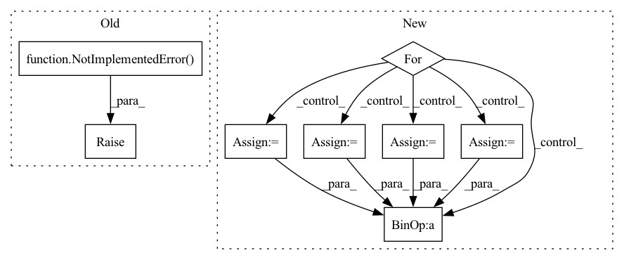

Pattern ID :34400

Before Change
Returns: values of Vnn * psi
"""
raise NotImplementedError()
def kinetic_energy(self, pos):
"""Main switch for the kinetic energy."""
After Change
vnn = 0.
for at1 in range(self.natom - 1):
c0 = self.ao.atom_coords[at1, :]
Z0 = self.ao.atomic_number[at1]
for at2 in range(at1 + 1, self.natom):
c1 = self.ao.atom_coords[at2, :]
Z1 = self.ao.atomic_number[at2]
rnn = torch.sqrt(((c0 - c1)**2).sum())
vnn += Z0 * Z1 / rnn
return vnn
def kinetic_energy(self, pos):
In pattern: SUPERPATTERN
Frequency: 3
Non-data size: 8
Instances
Fragment ID: 98665189
Project Name: nlesc-jcer/qmctorch
Commit Name: adaaa1ed349fb72bbacad1c74788252742eddbf5
Time: 2020-05-25
Author: nicolas.gm.renaud@gmail.com
File Name: qmctorch/wavefunction/wf_base.py
M Class Name: WaveFunction
N Class Name: WaveFunction
M Method Name: nuclear_repulsion(1)
N Method Name: nuclear_repulsion(1)
M Parent Class: torch.nn.Module
N Parent Class: torch.nn.Module
M File Name: qmctorch/wavefunction/wf_base.py
N File Name: qmctorch/wavefunction/wf_base.py
M Start Line: 57
M End Line: 57
N Start Line: 94
N End Line: 103
'>
Before Change
class TestSymNegCosineSimilarityLoss(unittest.TestCase):
def test_forward_pass(self):
raise NotImplementedError("TODO: implement unit tests")
After Change
class TestSymNegCosineSimilarityLoss(unittest.TestCase):
def test_forward_pass(self):
loss = SymNegCosineSimilarityLoss()
for bsz in range(1, 20):
z0 = torch.randn((bsz, 32))
p0 = torch.randn((bsz, 32))
z1 = torch.randn((bsz, 32))
p1 = torch.randn((bsz, 32))
// symmetry
l1 = loss((z0, p0), (z1, p1))
l2 = loss((z1, p1), (z0, p0))
self.assertAlmostEqual((l1 - l2).pow(2).item(), 0.)
def test_forward_pass_cuda(self):
'>
Fragment ID: 98665075
Project Name: lightly-ai/lightly
Commit Name: b9867bb4d9bfd8d7418ecf36cdfa2a650949cf82
Time: 2020-12-27
Author: daviddobre@gmail.com
File Name: tests/loss/test_SymNegCosineSimilarityLoss.py
M Class Name: TestSymNegCosineSimilarityLoss
N Class Name: TestSymNegCosineSimilarityLoss
M Method Name: test_forward_pass(1)
N Method Name: test_forward_pass(1)
M Parent Class: unittest.TestCase
N Parent Class: unittest.TestCase
M File Name: tests/loss/test_SymNegCosineSimilarityLoss.py
N File Name: tests/loss/test_SymNegCosineSimilarityLoss.py
M Start Line: 9
M End Line: 9
N Start Line: 9
N End Line: 23
'>
Before Change
Returns: values of Ven * psi
"""
raise NotImplementedError()
def nuclear_repulsion(self):
"""Compute the nuclear repulsion term
After Change
p = torch.zeros(pos.shape[0], device=self.device)
for ielec in range(self.nelec):
istart = ielec * self.ndim
iend = (ielec + 1) * self.ndim
pelec = pos[:, istart:iend]
for iatom in range(self.natom):
patom = self.ao.atom_coords[iatom, :]
Z = self.ao.atomic_number[iatom]
r = torch.sqrt(((pelec - patom)**2).sum(1)) // + 1E-12
p += -Z / r
return p.view(-1, 1)
def nuclear_repulsion(self):
'>
Fragment ID: 98665063
Project Name: nlesc-jcer/qmctorch
Commit Name: adaaa1ed349fb72bbacad1c74788252742eddbf5
Time: 2020-05-25
Author: nicolas.gm.renaud@gmail.com
File Name: qmctorch/wavefunction/wf_base.py
M Class Name: WaveFunction
N Class Name: WaveFunction
M Method Name: nuclear_potential(2)
N Method Name: nuclear_potential(2)
M Parent Class: torch.nn.Module
N Parent Class: torch.nn.Module
M File Name: qmctorch/wavefunction/wf_base.py
N File Name: qmctorch/wavefunction/wf_base.py
M Start Line: 50
M End Line: 50
N Start Line: 72
N End Line: 82
'>
Before Change
Returns: values of Vnn * psi
"""
raise NotImplementedError()
def kinetic_energy(self, pos):
"""Main switch for the kinetic energy."""
After Change
vnn = 0.
for at1 in range(self.natom - 1):
c0 = self.ao.atom_coords[at1, :]
Z0 = self.ao.atomic_number[at1]
for at2 in range(at1 + 1, self.natom):
c1 = self.ao.atom_coords[at2, :]
Z1 = self.ao.atomic_number[at2]
rnn = torch.sqrt(((c0 - c1)**2).sum())
vnn += Z0 * Z1 / rnn
return vnn
def kinetic_energy(self, pos):
'>
Fragment ID: 98665195
Project Name: nlesc-jcer/qmctorch
Commit Name: adaaa1ed349fb72bbacad1c74788252742eddbf5
Time: 2020-05-25
Author: nicolas.gm.renaud@gmail.com
File Name: qmctorch/wavefunction/wf_base.py
M Class Name: WaveFunction
N Class Name: WaveFunction
M Method Name: nuclear_repulsion(1)
N Method Name: nuclear_repulsion(1)
M Parent Class: torch.nn.Module
N Parent Class: torch.nn.Module
M File Name: qmctorch/wavefunction/wf_base.py
N File Name: qmctorch/wavefunction/wf_base.py
M Start Line: 57
M End Line: 57
N Start Line: 94
N End Line: 103